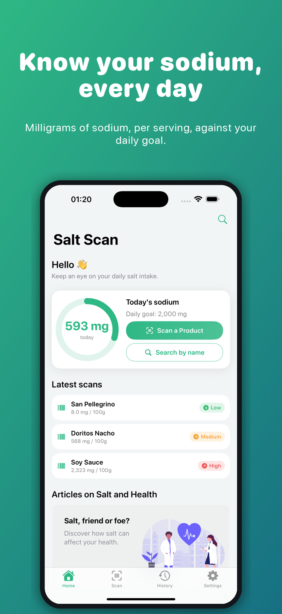
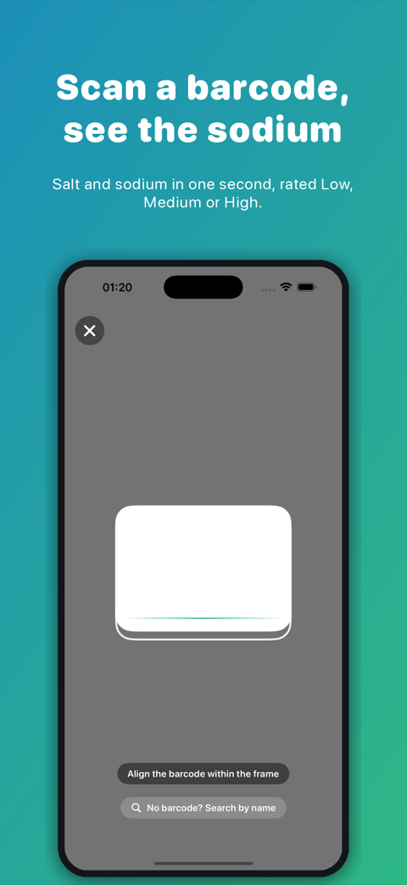
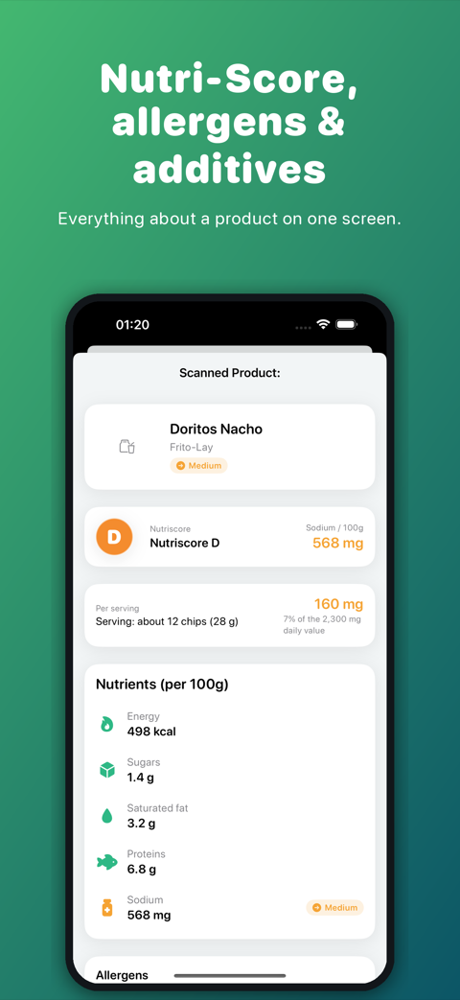
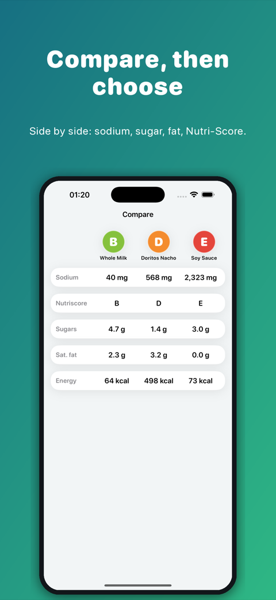
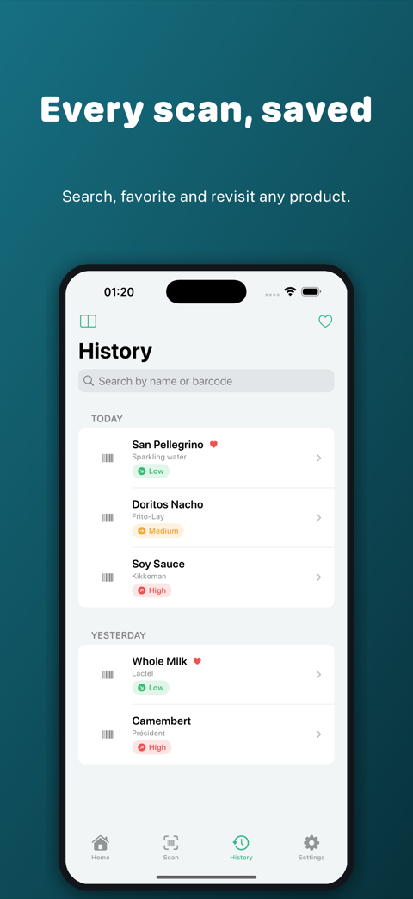

Salt Scan tells you how much salt and sodium is in your food before you eat it. Scan a barcode, see the numbers in a second, and track your daily intake against your own goal.

The number that matters, right in the aisle.
Scan any barcode and get the salt and sodium content in a second, with a clear Low / Medium / High rating. The rating follows the UK traffic-light thresholds: up to 0.3 g of salt per 100 g is low, above 1.5 g is high.
See the numbers the way your country states them: sodium in mg or salt in g, depending on your region. You can switch in Settings.
Add a portion to your journal and watch your salt ring fill up. Open any day to change an amount, move it or delete it.
Log half a serving, two servings, or the exact number of grams you ate. Salt Scan works out the salt for you.
Put products next to each other, sodium, sugars, saturated fat and Nutri-Score, and pick the better option.
Save the sodium of your journal portions to Apple Health if you like. It is off by default, and Salt Scan never reads your Health data.
No barcode at hand? Search the product by name from the Home screen.
Your scans are kept in a searchable history, with favorites for the products you buy again.
Calories, sugars, saturated fat, proteins, allergens and additives on the same screen as the salt.
From the barcode to your daily total.




Product data comes from Open Food Facts, the open food database maintained by volunteers worldwide. Accuracy depends on contributions: always check the label before making medical decisions.
No ads, no account, no tracking.